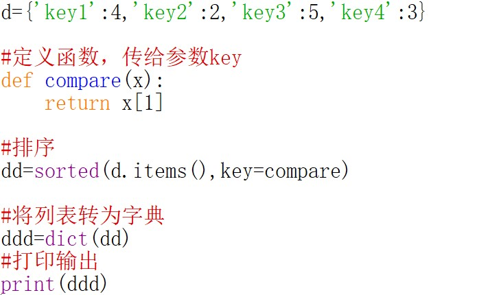

排序_不止于升降-Python基础连载（十四）
开篇
本期将介绍排序方法，注意是方法而不是算法，因此更侧重方法的使用，而不对其内部细节的实现原理进行深究。
简单的列表(list)排序
list自带有sort()方法可实现排序
默认是升序排列：
1 | lis=[1,3,2,5,4,8,6,9] |
可通过传入reverse=True来实现降序：
1 | lis=[1,3,2,5,4,8,6,9] |
你应该已经发现，上述的排序操作是直接在原列表中进行的。
除了上面的sort()，Python语言本身也有一种排序的函数，叫做sorted()
同样默认是升序排列：
1 | lis=[1,3,2,5,4,8,6,9] |
同样可传入reverse=True来实现降序排列：
1 | lis=[1,3,2,5,4,8,6,9] |
与sort()方法不同，sorted()并不是直接将原列表做排序，而是需要用一个新的变量来存储排序后的列表。
简单的集合(set)排序
集合本身是没有排序的方法的，所以只能使用系统自带的sorted()函数。
1 | s={3,2,12345,55,44,345,23456,23} |
这样就完成了升序排列，当然，可以传入reverse=True来实现降序排列：
1 | s={3,2,12345,55,44,345,23456,23} |
当然，你可能会想到先将集合转为列表，然后使用列表自带的排序方法sort()，最后将有序列表再转回集合。但是，在最后这一步，也就是有序列表转回集合时，由于集合的无序性，可能会导致顺序被打乱。所以不要这样做。
简单的元组(tuple)排序
1 | x=(1,3,2,5,4) |
看，在使用sorted()函数时，返回的是一个列表，你只需外面包裹一层tuple()，便可以转回元组了。
本质上还是对列表的排序。
字典(dict)排序
和集合一样，字典本身也没有排序方法，所以还是使用sorted()进行排序。
但不同的是，之前我们的排序对象都是一整个元素组成的序列，比如列表中的每一个元素组成一个列表，集合中的每一个元素组成了一个集合，而组成字典的每一个元素不是一整个元素，而是由两个小部分组成，一个是键（key），一个是值（value）。
那怎么办呢？
幸好，不管是内置的sorted()还是列表独有的sort()方法，都提供了一个key参数，它可以让我们指出按照每一个元素的哪一个部分进行排序。
所以这里我们将借助sorted()中的参数key对字典进行排序。
还记得之前的高阶函数吗？这里的sorted函数其实也是一种高阶函数，因为key后面需要传入一个函数，key用来接收该函数的返回值，该函数规定了排序的规则。
举个例子，假设字典d的组成如下：
1 | d={'key1':4,'key2':2,'key3':5,'key4':3} |
现在想要按照value升序排列
此时排序代码的整体框架为
1 | sorted(d.items(),key=...,reverse=True) |
其中使用d.items()是为了获取所有的键值对（如果写成`d``，那就是默认对键进行排序，而并非对整个字典做排序）
1 | d.items() |
而key(注意不要和字典的键搞混了)是用来接收函数的返回值的，该返回值就是我们指定的排序的依据，比如在本例中，该返回值就是字典中每个键值对的值。
所以，我们要想办法在key后面的…位置需要传入一个函数
那也不难，我们可以定义一个函数：
1 | def compare(x): |
然后将函数传给参数key即可：
1 | dd=sorted(d.items(),key=compare) |
得到输出
1 | [('key2', 2), ('key4', 3), ('key1', 4), ('key3', 5)] |
这是一个列表，我们可以将其转为字典：
1 | new=dict(dd) |
至此，我们就完成了对字典的排序。
看完上面的过程，如果你仍有疑惑，我猜应该是在定义函数compare那里吧，下面来解释一下：
1 | sorted(d.items(),key=...,reverse=True) |
key后面是一个函数，该函数的参数x是待排序的每一个元素
在本例中，待排序的每一个元素就是d.items()中的每一个元素，也就是一个个键值对
1 | ('key1', 4) |
函数compare会自动将上面的每一个元组作为参数传到函数内部，然后按照函数内部的语句去做相应操作，最终用key接收返回值。
由于是按照值(value)的大小进行排序，因此函数需要返回value，那怎么样拿到value呢？这就需要我们手写函数内部的代码了，用来规定函数要做的操作具体是什么
很简单，直接取下标为1处的对应值即可，比如这里的('key1', 4)，下标为1处的4便是需要返回的value
所以，在我们定义的函数compare中，传入了x，而返回了x[1]
解释完毕。
完整代码如下：

你应该已经发现，这种函数的定义并不复杂，所以完全可以用一个匿名函数来实现，这样的代码会更加简洁：
1 | d={'key1':4,'key2':2,'key3':5,'key4':3} |
更综合的排序问题
问题1：
现在有3个同学的年龄和身高
1 | lis=[{'age':18,'height':188},{'age':23'height':200},{'age':22,'height':179}] |
要求按照年龄降序排列。
【分析】
观察上面的列表，发现其元素是一个个的字典，想要按照年龄排序，那必须获取每个字典中的年龄。
我们的函数可以这样写：
1 | #x是lis中的某一个元素，这里也就是某一个字典 |
只要函数有了，问题就解决了，代码如下：
1 | lis=[{'age':18,'height':188},{'age':23,'height':200},{'age':22,'height':179}] |
输出
1 | [{'age': 23, 'height': 200}, {'age': 22, 'height': 179}, {'age': 18, 'height': 188}] |
这样就完成了按照年龄排序。
当然，用匿名函数更简洁：
1 | lis=[{'age':18,'height':188},{'age':23,'height':200},{'age':22,'height':179}] |
问题2：
请写出以下代码的运行结果：
1 | lis=[3,9,-4,-5,-3,8] |
这个有两个排序的关键字，一个是x>0，一个是abs(x)
如果你不清楚，我们可以先将匿名函数转为普通函数：
1 | def f(x): |
我们不妨先将lis中的每一个元素都作为参数传给该函数
1 | for i in lis: |
于是得到以下结果：
1 | (True, 3) |
每个元组的第一个位置（下标0）可以看作是第一个关键字，第二个位置（下标1）可以看作是第二个关键字，它们分别是x>0和abs(x)的返回值。
sorted()在进行排序时，会从下标较小的关键字位置（下标0）开始对比，若两者相同，再去比较下一个下标处（下标1）的关键字。
在这个问题中，由于False小于True，即0小于1，再加上默认是升序排列，因此会把元组第一个位置为False的放在前面作为一组，而第一个位置为True的放在后面作为另一组。
所以，第一组为
1 | (False, 4) |
第二组为
1 | (True, 3) |
接下来，就说进行组内排序了,首先看排在前面的第一组：
因为此时第一个关键字x>0均为False，所以尝试比较第二个关键字abs(x)，也是小的在前，大的在后，比较结果为:
1 | abs(-3)<abs(-4)<abs(-5) |
也就是
1 | 3<4<5 |
所以第一组的排序结果为：
1 | [-3,-4,-5] |
再看后面的第二组，此时第一个关键字都是True，因此需要比较第二个关键字abs(x)，比较结果为：
1 | 3<8<9 |
因此排序结果为
1 | [3,8,9] |
最后组装两组，便可得到最终的排序结果：
1 | [-3, -4, -5, 3, 8, 9] |
问题3：
使用集合对列表进行去重，要求不改变列表中元素原来的相对位置，请自行举例说明
【分析】
如果只是单纯去重的话很简单:
1 | lis=[2,1,3,2,1,5,7] |
但也很明显，原列表中各个元素的相对位置发生了变化。
那如何才能保持相对位置不变呢？
还是靠我们的老朋友，就是给参数key传入函数啦！
在上面的代码中，我们已经得到了去重后的列表xx（注意此时的列表不一定有序，这里是巧合），只需要对xx做个排序就可以了，只不过在这次的排序中，函数无需我们构造，而是可以直接使用lis.index这个函数，没错，这的确是个函数，我们可以验证：
1 | type(lis.index) |
所以代码可以接着写：
1 | xx.sort(key=lis.index) |
或者
1 | s=sorted(xx,key=lis.index) |
最后都能得到题目所要求的结果：
1 | [2, 1, 3, 5, 7] |
以上就是三道排序的练习题，你掌握了吗？
扯些别的
最后，由问题三出发，想说一些与本期’排序’主题无关的知识:
你如果并不知道有这么个函数list.index，完全可以使用之前讲的循环操作完成列表的去重。代码可以这样写：
1 | lis=[2,1,3,2,1,5,7] |
输出结果
1 | [2, 1, 3, 5, 7] |
通向南极洲的道路不止一条，当无法找寻到最佳的那条道路时，请循着你最熟悉的那一条走下去，这也不失为上策。